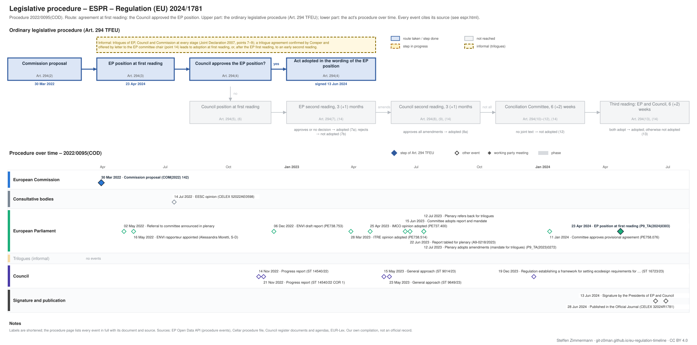

← Regulation timeline › ESPR › Legislative procedure · All procedures
Procedure 2022/0095(COD), completed. Drawing: SVG · PNG · PDF (A3) · draw.io · Page as Markdown: espr.md
| Stage | Completed, published 28 Jun 2024 |
|---|---|
| Latest activity | 28 Jun 2024 · Signature and publication: Published in the Official Journal (CELEX 32024R1781) |

| Committee | Role | Rapporteur | Shadow rapporteurs |
|---|---|---|---|
| ENVI Environment, Climate and Food Safety | Responsible | Alessandra Moretti (S&D), appointed 16 May 2022 | Silvia Sardone (ID), Jessica Polfjärd (EPP), Alexandr Vondra (ECR), Jan Huitema (Renew), Sara Matthieu (Greens/EFA), Malin Björk (The Left) |
| IMCO Internal Market and Consumer Protection | Role not given | David Cormand (Greens/EFA), appointed 31 Aug 2022 | – |
| ITRE Industry, Research and Energy | Role not given | Maria Spyraki (EPP), appointed 05 May 2022 | – |
Source: EP Open Data API (participations) and the Legislative Observatory (joint committee, opinions declined); names link to each Member's page on the EP website. The API names no committee for shadow rapporteurs; they are assigned by the EP's order of participants, which groups each committee.
| Date | Actor | Event | Document | Source |
|---|---|---|---|---|
| 2022-05-02 | European Parliament | Referral to committee announced in plenary | EP procedure file | EP Open Data API, procedure 2022-0095 (REFERRAL) |
| 2022-05-16 | European Parliament | ENVI rapporteur appointed (Alessandra Moretti, S-D) | EP procedure file | EP Open Data API, procedure 2022-0095 (participation RAPPORTEUR) |
| 2022-07-14 | Consultative bodies | EESC opinion | CELEX 52022AE0598 | Cellar procedure file 2022/95 |
| 2022-11-14 | Council | Progress report | ST 14540/22 | Cellar procedure file 2022/95 (Council register) |
| 2022-11-21 | Council | Progress report | ST 14540/22 COR 1 | Cellar procedure file 2022/95 (Council register) |
| 2022-12-06 | European Parliament | ENVI draft report | PE738.753 | EP Open Data API, procedure 2022-0095 (COMMITTEE_TABLING_REPORT) |
| 2023-03-28 | European Parliament | ITRE opinion adopted | PE738.514 | EP Open Data API, procedure 2022-0095 (COMMITTEE_ADOPTING_OPINION) |
| 2023-04-25 | European Parliament | IMCO opinion adopted | PE737.400 | EP Open Data API, procedure 2022-0095 (COMMITTEE_ADOPTING_OPINION) |
| 2023-05-15 | Council | General approach | ST 9014/23 | Cellar procedure file 2022/95 (Council register) |
| 2023-05-23 | Council | General approach | ST 9649/23 | Cellar procedure file 2022/95 (Council register) |
| 2023-06-15 | European Parliament | Committee adopts report and mandate | EP procedure file | EP Open Data API, procedure 2022-0095 (COMMITTEE_ADOPTING_REPORT) |
| 2023-06-22 | European Parliament | Report tabled for plenary | A9-0218/2023 | EP Open Data API, procedure 2022-0095 (TABLING_PLENARY) |
| 2023-07-12 | European Parliament | Plenary refers back for trilogues | EP procedure file | EP Open Data API, procedure 2022-0095 (PLENARY_REFER_COMMITTEE_INTERINSTITUTIONAL_NEGOTIATIONS) |
| 2023-07-12 | European Parliament | Plenary adopts amendments (mandate for trilogues) | P9_TA(2023)0272 | EP Open Data API, procedure 2022-0095 (PLENARY_AMEND) |
| 2023-12-19 | Council | Regulation establishing a framework for setting ecodesign requirements for sustainable … | ST 16723/23 | Cellar procedure file 2022/95 (Council register) |
| 2024-01-11 | European Parliament | Committee approves provisional agreement | PE758.076 | EP Open Data API, procedure 2022-0095 (COMMITTEE_APPROVE_PROVISIONAL_AGREEMENT) |
| 2024-04-23 | European Parliament | EP position at first reading (Art. 294(3) TFEU) | P9_TA(2024)0303 | EP Open Data API, procedure 2022-0095 (PLENARY_AMEND_PROPOSAL) |
| 2024-06-13 | Signature and publication | Signature by the Presidents of EP and Council | EP procedure file | EP Open Data API, procedure 2022-0095 (SIGNATURE) |
| 2024-06-28 | Signature and publication | Published in the Official Journal | CELEX 32024R1781 · en.md de.md | EP Open Data API, procedure 2022-0095 (PUBLICATION_OFFICIAL_JOURNAL) |
Every document the Council register, the EU database of the Parliament of Austria or the EP lists for the procedure, with its state: public documents link to the official file; documents that are not public link to their entry in the Austrian database where there is one (metadata only). Status: public; not public; not public, leak available (an unofficial copy is known to circulate outside the institutions; it is neither published nor quoted here). Released: when a document listed as not public was released, by the date of the Council's public PDF (a technical date) or else the day our daily check found it public.
| Date | Document | Kind | Subject | Status | Released | Text |
|---|---|---|---|---|---|---|
| 2022-04-04 | ST 7854/22 | council-transmission | Proposal for a REGULATION OF THE EUROPEAN PARLIAMENT AND OF THE COUNCIL establishing a framework for setting ecodesign requirements for sustainable products … | public status unknown | – | – |
| 2022-04-04 | ST 7854/22 ADD 1 | council-transmission | ANNEXES to the Commission proposal for a Regulation of the European Parliament and of the Council establishing a framework for setting ecodesign requirements … | public status unknown | – | – |
| 2022-04-04 | ST 7854/22 ADD 2 | council-transmission | REGULATORY SCRUTINY BOARD OPINION Sustainable Products Initiative | public status unknown | – | – |
| 2022-04-04 | ST 7854/22 ADD 3 | council-transmission | COMMISSION STAFF WORKING DOCUMENT Subsidiarity Grid Accompanying the document Proposal for a Regulation of the European Parliament and of the Council … | public status unknown | – | – |
| 2022-04-04 | ST 7854/22 ADD 4 | council-transmission | COMMISSION STAFF WORKING DOCUMENT IMPACT ASSESSMENT Accompanying the document Proposal for a Regulation of the European Parliament and of the Council … | public status unknown | – | – |
| 2022-04-04 | ST 7854/22 ADD 5 | council-transmission | COMMISSION STAFF WORKING DOCUMENT IMPACT ASSESSMENT Accompanying the document Proposal for a Regulation of the European Parliament and of the Council … | public status unknown | – | – |
| 2022-04-04 | ST 7854/22 ADD 6 | council-transmission | COMMISSION STAFF WORKING DOCUMENT IMPACT ASSESSMENT Accompanying the document Proposal for a Regulation of the European Parliament and of the Council … | public status unknown | – | – |
| 2022-04-04 | ST 7854/22 ADD 7 | council-transmission | COMMISSION STAFF WORKING DOCUMENT IMPACT ASSESSMENT Accompanying the document Proposal for a Regulation of the European Parliament and of the Council … | public status unknown | – | – |
| 2022-04-04 | ST 7854/22 ADD 8 | council-transmission | COMMISSION STAFF WORKING DOCUMENT EXECUTIVE SUMMARY OF THE IMPACT ASSESSMENT Accompanying the document Proposal for a Regulation of the European Parliament and … | public status unknown | – | – |
| 2022-05-04 | ST 7854/22 REV 1 | council-transmission | public status unknown | – | – | |
| 2022-07-14 | CELEX 52022AE0598 | opinion | Opinion of the European Economic and Social Committee on the communication from the Commission to the European Parliament, the Council, the European Economic … | public | – | – |
| 2022-07-19 | ST 11495/22 | council-transmission | Opinion of the European Economic and Social Committee on the Proposal for a Regulation of the European Parliament and of the Council establishing a framework … | public status unknown | – | – |
| 2022-09-09 | ST 12197/22 | council-note | Regulation establishing a framework for setting ecodesign requirements for sustainable products and repealing Directive 2009/125/EC - Policy debate | public status unknown | – | – |
| 2022-10-04 | ST 13137/22 | council-note | List of working papers (WK) distributed to the Working Party on Competitiveness and Growth (Internal Market-Ecodesign) in the third quarter of 2022 | public status unknown | – | – |
| 2022-10-04 | ST 13139/22 | council-note | List of working papers (WK) distributed to the Working Party on Competitiveness and Growth (Internal Market-Attachés) in the third quarter of 2022 | public status unknown | – | – |
| 2022-10-04 | ST 13140/22 | council-note | List of working papers (WK) distributed to the Working Party on Competitiveness and Growth (Internal Market) in the third quarter of 2022 | public status unknown | – | – |
| 2022-10-07 | ST 13120/22 | council-note | Policy debate | public status unknown | – | – |
| 2022-11-09 | PE738.514 | ep-draft-opinion | DRAFT OPINION on the proposal for a regulation of the European Parliament and of the Council on Establishing a framework for setting ecodesign requirements for … | public | – | – |
| 2022-11-10 | PE737.400 | ep-draft-opinion | DRAFT OPINION on establishing a framework for setting ecodesign requirements for sustainable products and repealing Directive 2009/125/EC | public | – | – |
| 2022-11-14 | ST 14540/22 | council-progress-report | Progress report | public | – | – |
| 2022-11-21 | ST 14540/22 COR 1 | council-progress-report | Progress report | public | – | – |
| 2022-11-23 | ST 14540/22 REV 1 | council-text | not public* | – | – | |
| 2022-12-06 | PE738.753 | ep-draft-report | DRAFT REPORT on the proposal for a regulation of the European Parliament and of the Council establishing a framework for setting eco-design requirements for … | public | – | – |
| 2022-12-22 | ST 16347/22 | council-note | List of working papers (WK) distributed to the Working Party on Competitiveness and Growth (Internal Market-Attachés) in the fourth quarter of 2022 | public status unknown | – | – |
| 2022-12-22 | ST 16348/22 | council-note | List of working papers (WK) distributed to the Working Party on Competitiveness and Growth (Internal Market) in the fourth quarter of 2022 | public status unknown | – | – |
| 2022-12-22 | ST 16349/22 | council-note | List of working papers (WK) distributed to the Working Party on Competitiveness and Growth (Internal Market-Ecodesign) in the fourth quarter of 2022 | public status unknown | – | – |
| 2023-03-17 | ST 7289/23 | council-note | Guidance for further work | public status unknown | – | – |
| 2023-03-31 | PE738.514 | ep-opinion | OPINION on the proposal for a regulation of the European Parliament and of the Council on Establishing a framework for setting ecodesign requirements for … | public | – | – |
| 2023-04-27 | PE737.400 | ep-opinion | OPINION on the proposal for a Regulation of the European Parliament and of the Council establishing a framework for setting ecodesign requirements for … | public | – | – |
| 2023-05-15 | ST 9014/23 | council-position | General approach | public | – | – |
| 2023-05-15 | ST 9014/23 ADD 1 | council-note | Statement | public status unknown | – | – |
| 2023-05-15 | ST 9014/23 ADD 1 REV 1 | council-note | Statement | public status unknown | – | – |
| 2023-05-16 | ST 9470/23 | council-note | List of working papers (WK) distributed in the Working Party on Competitiveness and Growth (Internal Market-Attachés) in the first quarter of 2023 | public status unknown | – | – |
| 2023-05-16 | ST 9475/23 | council-note | List of working papers (WK) distributed in the Working Party on Competitiveness and Growth (Internal Market) in the first quarter of 2023 | public status unknown | – | – |
| 2023-05-16 | ST 9477/23 | council-note | List of working papers (WK) distributed in the Working Party on Competitiveness and Growth (Internal Market - Ecodesign) in the first quarter of 2023 | public status unknown | – | – |
| 2023-05-22 | ST 9014/23 ADD 2 | council-note | Statement | public status unknown | – | – |
| 2023-05-23 | ST 9649/23 | council-position | General approach | public | – | – |
| 2023-06-22 | A9-0218/2023 | ep-report | REPORT on the proposal for a regulation of the European Parliament and of the Council establishing a framework for setting eco-design requirements for … | public | – | – |
| 2023-07-11 | ST 9648/23 REV 1 | council-note | public status unknown | – | – | |
| 2023-07-12 | P9_TA(2023)0272 | ep-position | Ecodesign Regulation | public | – | – |
| 2023-07-17 | ST 11881/23 | council-note | List of working papers (WK) distributed to the Working Party on Competitiveness and Growth (Internal Market-Attachés) in the second quarter of 2023. | public status unknown | – | – |
| 2023-07-17 | ST 11896/23 | council-note | List of working papers (WK) distributed to the Working Party on Competitiveness and Growth (Internal Market) in the second quarter of 2023. | public status unknown | – | – |
| 2023-07-17 | ST 11901/23 | council-note | List of working papers (WK) distributed to the Working Party on Competitiveness and Growth (Internal Market - Ecodesign) in the second quarter of 2023. | public status unknown | – | – |
| 2023-12-19 | ST 16723/23 | agreed-text | Regulation establishing a framework for setting ecodesign requirements for sustainable products and repealing Directive 2009/125/EC - Analysis of the final … | public | – | – |
| 2023-12-22 | PE758.076 | agreed-text | PROVISIONAL AGREEMENT RESULTING FROM INTERINSTITUTIONAL NEGOTIATIONS Proposal for a regulation of the European Parliament and of the Council establishing a … | public | – | – |
| 2024-01-09 | ST 5147/24 | council-note | Regulation establishing a framework for setting ecodesign requirements for sustainable products and repealing Directive 2009/125/EC - Letter to the Chair of … | public status unknown | – | – |
| 2024-02-23 | PE 106/23 | council-note | REGULATION OF THE EUROPEAN PARLIAMENT AND OF THE COUNCIL establishing a framework for the setting of ecodesign requirements for sustainable products, amending … | public status unknown | – | – |
| 2024-03-18 | ST 7925/24 | council-note | List of working papers (WK) distributed to the Working Party on Competitiveness and Growth (Internal Market - Ecodesign) in the third quarter of 2023. | public status unknown | – | – |
| 2024-03-18 | ST 7954/24 | council-note | List of working papers (WK) distributed to the Working Party on Competitiveness and Growth (Internal Market - Ecodesign) in the fourth quarter of 2023. | public status unknown | – | – |
| 2024-04-23 | P9_TA(2024)0303 | ep-position | Ecodesign Regulation | public | – | – |
| 2024-04-29 | ST 9221/24 | council-note | Outcome of the European Parliament's first reading (Strasbourg, 22 to 25 April 2024) | public status unknown | – | – |
| 2024-05-21 | ST 9266/24 | council-note | Draft REGULATION OF THE EUROPEAN PARLIAMENT AND OF THE COUNCIL establishing a framework for the setting of ecodesign requirements for sustainable products, … | public status unknown | – | – |
| 2024-05-21 | ST 9266/24 ADD 1 | council-note | Draft REGULATION OF THE EUROPEAN PARLIAMENT AND OF THE COUNCIL establishing a framework for the setting of ecodesign requirements for sustainable products, … | public status unknown | – | – |
| 2024-05-24 | ST 9266/24 COR 1 | council-note | public status unknown | – | – | |
| 2024-05-28 | ST 10389/24 | council-note | Voting result Regulation of the European Parliament and of the Council establishing a framework for the setting of ecodesign requirements for sustainable … | public status unknown | – | – |
| 2024-06-14 | PE 106/23 REV 1 | council-note | REGULATION OF THE EUROPEAN PARLIAMENT AND OF THE COUNCIL ESTABLISHING A FRAMEWORK FOR THE SETTING OF ECODESIGN REQUIREMENTS FOR SUSTAINABLE PRODUCTS, AMENDING … | public status unknown | – | – |
* Not public: the registers are checked again daily until the document is released; last check 2026-10-05.
Unofficial Markdown conversions for reading, searching and project folders; only the official document is authentic. "Read" opens the rendered text on GitHub, where a link to a provision (#art-13, #rec-12, #annex-i) jumps to it.
| Date | Stage | Document | Markdown | Read |
|---|---|---|---|---|
| 2024-06-28 | oj | CELEX 32024R1781 | en de | GitHub |
| 2024-08-07 | corrigendum | CELEX 32024R1781R(01) | en de | GitHub |
| 2025-04-28 | corrigendum | CELEX 32024R1781R(02) | en de | GitHub |
| 2025-11-27 | corrigendum | CELEX 32024R1781R(03) | de | GitHub |
Standardisation requests (Art. 10 of Regulation (EU) No 1025/2012) ask CEN, CENELEC and ETSI to draft harmonised standards in support of the act; standards cited in the Official Journal give a presumption of conformity. Planned requests come from the Commission's annual Union work programmes for European standardisation (Art. 8), which are plans, not decisions. Deadlines as set in the request's annexes (hand-checked).
COMMISSION IMPLEMENTING DECISION of 31.7.2024 on a standardisation request to the European Committee for Standardisation, the European Committee for Electrotechnical Standardisation, and the European Telecommunications Standards Institute as regards digital product passports in support of Union policy on ecodesign requirements for sustainable products and on batteries and waste batteries
adopted 2024-07-31; expires 2028-03-30; ESOs: CEN, CENELEC, ETSI. eNorm · decision and annexes · en.md · de.md
COMMISSION IMPLEMENTING DECISION of 28.11.2025 amending Implementing Decision C(2024)5423 as regards the legal basis and the deadlines for the adoption of the standards
adopted 2025-11-28; expires 2028-03-30; ESOs: CEN, CENELEC, ETSI; amends M/604. eNorm · decision and annexes · en.md · de.md
Comitology committees of Member State representatives give opinions on draft implementing acts (Regulation (EU) No 182/2011); expert groups advise the Commission on delegated acts, guidance and implementation; groups set up by an act itself (e.g. the NIS Cooperation Group) bring together the Member States, the Commission and agencies. Meetings and documents as published in the Comitology Register, the Register of Commission expert groups and on the Commission's pages of these groups, from 2024 on.
Comitology committee C130300, ENV; advisory procedure (Art. 4 of Regulation (EU) No 182/2011); examination procedure (Art. 5, 6 and 7 of Regulation (EU) No 182/2011). Official source: Comitology Register ↗
Expert group E03969, ENER, ENV, GROW. Official source: Register of Commission expert groups ↗
| Date | Meeting | Documents |
|---|---|---|
| 2026-03-19 | Ecodesign Forum - Digital Product Passport (DPP) | agenda · agenda · minutes |
| 2025-11-24 | Ecodesign Forum | agenda · minutes |
| 2025-04-01 | Meeting of the "Group of Experts on Ecodesign for Sustainable Products and Energy Labelling" on Electronic Displays of 1 April 2025 | agenda |
| 2025-02-19 | First meeting of the Group of Experts on Ecodesign for Sustainable Products and Energy Labelling (‘the Ecodesign Forum’ - E03969) - Wed. 19/02/2025 and Thurs. 20/02/2025 (hybrid format) | agenda · agenda · minutes · other document · other document · other document · other document |